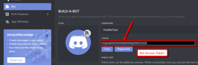

Discord

| Versionsinformation | |
|---|---|
| Core | from 2.3.x |
As Discord has an API and is not installed on a local server, the integration of Discord is a bit tricky.
Contents
About the plugin
The plugin is needed to access the Discord API, used for
- Latest posts module
- Avatars from discord for users
- Notifications for users (since EQdkp Plus 2.3.11)
The Plugin is not a bot that interacts with your discord channel, as there is more overhead neccessary.
Login Provider
You can add Discord as a Login Provider, so users can log in using Discord. For the integration, see Loginmethods#Discord_.28since_2.3.29
Discord Plugin
To get the latest posts module working, you need to install the Discord Plugin at the Extension Management. After that, follow this instructions:
- You need a new app for this, but as you can add as many apps as you want, that's no problem.
- Go to https://discordapp.com/developers/applications/me and create a new App, click on "Create Application"
- Note the Client-ID of your newly created App
{kind=link}
- Insert the Client-ID into the settings field of the EQdkp Plus plugin
- Go to the Bot-Tab of your created discord app and click on "Create a Bot User", and "Yes do it" at the Popup
- Uncheck the Checkbox "Public Bot"
- At the Bot User, click on "Click to reveal" to get the Token of the Bot User, and note it down
 Then, go back to the Settings Page of the EQdkp Plus Discord Plugin:
{kind=link}
- Insert the Guild-ID. It's the first long number at the URL of your Guildserver. You can also find the Guild-ID at "Server Settings" > "Widget" > "Server ID"
{kind=link}
- Insert the noted Client-ID
- Insert the noted Bot User Token (not the Client-Secret)
- Click on Save
- After that, a Button at the side of the Client-ID will appear. Click on it, and add the Bot to your Guildserver
- Promote the Bot to a group that has the following permissions: #Bot permissions
Latest Posts Module
You need to install the EQdkp Plus Discord Plugin and to fill out each field at the Plugin Settings. Also,the Server Widget must be enabled at the Server settings.
- Select "Discord" as Forum module
- Select "None" as Database Connection
- Make your other settings, as blacklist/whitelist, preview of the post, ...
If you want to use another Discord Bot/Guild ID than set at the Discord plugin, try this:
- As URL to your board, insert your guild ID and the bot token, seperated by ":", e.g: "232121507191175488:MjU2QWcwOTI1QWE2OTA2NzUy.CyoMNB.CtzJdoyXTlWVEuQWEtWXJhxzv74"
Discord Avatars
You need to install the EQdkp Plus Discord Plugin and to fill out each field at the Plugin Settings.
The avatars from discord can automatically be used for users with the same name at EQdkp Plus and Discord
- Go the EQdkp Plus Admin Settings, Tab "User"
- Allow Discord for the users
- As Default Avatar, set "EQdkp Plus" or "Gravatar", as Discord Avatar Provider does not deliver a default avatar
Notifications
Since EQdkp Plus 2.3.11, Discord notifications are supported. Requirement is the installed Discord Plugin. You should create a new User for the Discord notifications, e.g. because your admin user won't get notification if he is the one that triggers them (e.g. by adding a raid). At the personal user settings, tab "Notifications", you can enter your Discord User-ID or a Channel-ID. Moreover, you should set the delivering-method of your desired notification at the personal user settings to "Discord".
Direct Message
The bot can send you notifications by direct message, means that they are private. You need to insert your Discord User-ID into the appropriate field at your personal notification settings. To get your Discord User-ID, execute the command "\Username#Discriminator" in a channel.
{kind=link}
Insert the numbers into the usersettings field.
Channel-ID
You can let post the notifications also to a channel. Please remind that all notifications in a channel are public to all other users in this channel. Get the Channel-Number from the URL and prefix it with "chan:" before saving it into the usersettings field.
{kind=link}
{kind=link}
Bot permissions
When adding the bot to the guild, the permissions are shown. If you have added the bot before, here are the permissions the bot needs:
- All text permissions